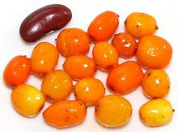

Magnolias

SAFARI
Users
Igde
[Russian Olive, Russian Silverberry, Oleaster, Wild Olive; Elaeagnus angustifolia]
Native from Southern Russia through Turkey and Iran, this shrub has been
introduced to North America, where it has become an invasive. It's roots
host a bacteria that fixes nitrogen, so it does fine in rather poor
soils. The red fruits are lightly sweet-tart with a dry, mealy mouth feel.
The photo specimens, labeled "Igde", were purchased in Los Angeles from
a multi-ethnic market serving significant communities from the plant's
native regions. They were about 1.0 inch long and 0.65 inch diameter.
The skins are extremely thin and papery, and the dried fruits weighed 21
to the ounce. In Iran, powdered fruit is mixed with milk as a treatment
for joint pain, and they are used in the traditional Persian Spring
festival, Haft Sin.
Sea-Buckthorn
 [Sandthorn, Sallowthorn, Seaberry; Hippophae rhamnoides]
Native to Nepal, this shrub spread throughout Eurasia, from Britain to China and from Norway to Spain. While long used as an ingredient in alcoholic and non-alcoholic beverages, particularly in southern France, it has recently become an "ingredient of the moment" (2018) among high priced chefs serving the 1%. These guys live by hyping rare ingredients for a few months, then move on. The yellow fruits are tiny, taking more than 28 berries to weigh an ounce, and difficult to harvest, so the tart fruit or juice is quite expensive - perfect for the chef set.
These berries are quite tart, but their bitterness is reduced by the
first frost. The photo specimens, from Lithuania, were purchased from the
frozen food cases of a large multi-ethnic market in Los Angeles (Sunland)
for 2019 US $6.32 / pound. The largest were about 0.42 x 0.34 inch.
Interestingly, they don't freeze at all solid at -4°F/-20°C.
Sea-Buckthorn is high in vitamin C, and has recently been in the
news due to a Chinese study that showed it effective in supporting
eye health and reducing macular degradation. The active ingredient is
Proanthocyanidins, which are also in red wine, baking chocolate, apples
and dried fruits.
Buffaloberry
[Silver Buffaloberry; Shepherdia argentea | Canadian Buffaloberry Shepherdia canadensis]
Silver Buffaloberry is native to south central Canada and north central United States, but scattered patches can be found as far south as Utah and Northern California. Canadian Buffaloberry is found across North America from the Arctic Circle down into northern United States. Buffaloberries, particularly the Canadian, were important to American Indians within their range. Though the berries can be quite bitter, the bitterness is combined with sweetness. The berries, which are about 0.20 inch diameter, can be prepared similarly to cranberry sauce or cranberry cocktail, and after they are sweetened by the first frost, can be made into jellies, jams and syrups, though usually mixed with sweeter fruit.
One major use has been in preparation of xoosum (Indian ice cream).
The bitterness is from saponins, but these enable the berries to become
"sudsy" when whipped. buffaloberries are mixed with sweet fruit such as
raspberries and beaten vigorously until a heavy foam is created.
Photo of Silver Buffaloberry by SriMesh distributed under
license Creative Commons
Attribution-ShareAlike v3.0 Unported.
American Silverberry
[Wolf-willow; Elaeagnus commutata]
Native to Alaska south to Utah and across Canada and the northernmost
states of the United States, these shrubs are found mostly in sandy or
gravely soils. Because they host nitrogen fixing bacteria in their roots,
they can thrive in such poor soils. The photo specimens were growing
in Montana. The silvery berries, which grow to nearly 1/2 inch long, are
edible but sour and rather floury in texture, so are not sought after.
The plant contains Beta-carbolines, which are somewhat psychedelic, used
mostly in combination with other substances.
Photo by Matt Lavin distributed under license
Creative Commons
Attribution-ShareAlike v2.0 Generic.
Goumi
[Gumi, Natsugumi, Cherry silverberry; Elaeagnus multiflora]
Native to East Asia, fruits of this shrub have long been valued as
a "nutraceutical" in China, a food with medicinal value. It has been
planted as a decorative in Europe and North America, where it has become
somewhat invasive. The fruits can be up to 0.4 inch long and are juicy
and sweet, but with an astringent taste likened to rhubarb.
Photo by Abrahami distributed under license Creative Commons
Attribution-ShareAlike v2.5 Generic.
Japanese silverberry
[Umbellate oleaster, Autumn-olive, Autumn elaeagnus, Spreading oleaster; Elaeagnus umbellata]
Native from the Himalayas east to Japan, this shrub does well in very
poor soil because its roots host a nitrogen fixing bacteria. The fruit
is juicy and sweet-tart with chewable seeds. Although the berries are
small, around 0.8 inches long, the shrub is a heavy producer, and the
fruit dries well. It is very high in the antioxidant lycopene, as much
as 17 times as much as an equal weight of tomatoes.
Photo by VoDeTan2 distributed under license Creative Commons
Attribution-ShareAlike v3.0 Unported.